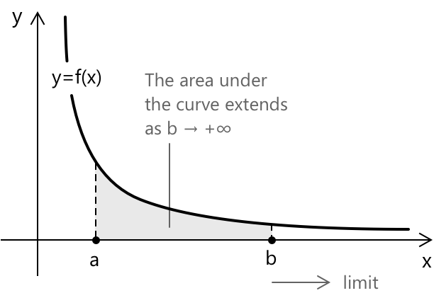

Невласні інтеграли
Означення
Невластиві інтеграли — це інтеграли, у яких або проміжок інтегрування є необмеженим, або підінтегральна функція стає необмеженою в одній або кількох точках, або і те, і інше. В елементарному численні визначений інтеграл:
\[ \int_a^b f(x)\,dx \]
визначається за припущенням, що:
- Проміжок \([a,b]\) є обмеженим.
- Функція \(f\) є неперервною або принайм інтегруемою на цьому проміжку.
Однак багато важливих задач у математиці та прикладних науках природним чином виходять за ці обмеження. Ми можемо зустріти необмежений проміжок, такий як \((a,+\infty)\), або функцію, яка стає необмеженою в одній або кількох точках проміжку. У таких випадках інтеграл називається невластивим інтегралом. Його значення не є очевидним: воно має бути визначене через граничний процес.
Невластиві інтеграли не розширюють клас інтегруємих за Ріманом функцій. Вони переосмислюють проблемні ситуації через границі звичайних інтегралів. Збіжність є глобальною властивістю: вона залежить від того, як функція поводиться біля нескінченності або біля особливості, а не лише локально.
Чому граничний процес? Розглянемо застосування Основної теореми числення безпосередньо до наступного інтеграла:
\[ \int_{-1}^{1} \frac{1}{x^2}\,dx \]
Наївне обчислення дає \(\left[-x^{-1}\right]_{-1}^{1} = -2\), що є явно помилковим: підінтегральна функція суворо додатна, тому інтеграл не може бути від'ємним. Проблема полягає в тому, що \(1/x^2\) має особливість у точці \(x=0\), яка лежить всередині проміжку (Основна теорема тут не застосовується). Цей приклад показує, що розширення інтегрування за межі його класичної області визначення потребує більше, ніж механічних обчислень: воно потребує означення, побудованого на границях.
Сліпе застосування Основної теореми числення до невластивого інтеграла є не просто неточним; воно може призвести до результатів, які є не просто помилковими, а математично безглуздими.
Невластиві інтеграли на необмежених проміжках
Припустимо, що \(f\) є неперервною на \([a,+\infty)\). Інтеграл: \[ \int_a^{+\infty} f(x)\,dx \] визначається як границя: \[ \int_a^{+\infty} f(x)\,dx \;:=\; \lim_{b \to +\infty} \int_a^b f(x)\,dx \]
за умови, що ця границя існує і є скінченною. Іншими словами, ми інтегруємо до скінченної верхньої межі \(b\), а потім дозволяємо \(b\) зростати без обмеження:

- Якщо границя існує і є скінченною, кажуть, що інтеграл збігається: площа під кривою накопичується до визначеного значення, незважаючи на необмежену область визначення.
- Якщо границя не існує або є нескінченною, інтеграл розбігається: йому не можна приписати жодного скінченного значення.
Та сама ідея застосовується, коли нижня межа дорівнює \(-\infty\). Для інтеграла вигляду: \[ \int_{-\infty}^b f(x)\,dx \] означення є симетричним: \[ \int_{-\infty}^b f(x)\,dx \;:=\; \lim_{a \to -\infty} \int_a^b f(x)\,dx \]
Для інтегралів по всій прямій жодна з кінцевих точок не є скінченною, тому однієї границі вже недостатньо. Замість цього ми розбиваємо інтеграл у довільній точці \(c\) і розглядаємо кожну половину окремо: \[ \int_{-\infty}^{+\infty} f(x)\,dx \] визначається як: \[ \int_{-\infty}^{+\infty} f(x)\,dx = \int_{-\infty}^c f(x)\,dx + \int_c^{+\infty} \! f(x)\,dx \] для деякого дійсного \(c\), за умови, що обидва інтеграли збігаються окремо. Результат не залежить від вибору \(c\).
Приклад 1
Щоб проілюструвати збіжність, обчислимо наступний інтеграл: \[ \int_1^{+\infty} \frac{1}{x^2}\,dx \]
Відповідно до означення, ми замінюємо нескінченну верхню межу скінченною межею \(b\) і обчислюємо отриманий звичайний інтеграл:
\[ \int_1^b \frac{1}{x^2}\,dx = \int_1^b x^{-2}\,dx = \left[ -x^{-1} \right]_1^b = -\frac{1}{b} + 1 \]
Залишається взяти границю при \(b \to +\infty\). Оскільки \(b\) зростає без обмеження, доданок \(\frac{1}{b}\) зникає, і ми отримуємо:
\[ \lim_{b \to +\infty} \left(1 - \frac{1}{b}\right) =1 \]
Границя існує і є скінченною, отже ми робимо висновок: \[ \int_1^{+\infty} \frac{1}{x^2}\,dx = 1 \] і інтеграл збігається до \(1\).
Приклад 2
Тепер розглянемо випадок, коли границя не є скінченною. Інтеграл:
\[ \int_1^{+\infty} \frac{1}{x}\,dx \]
виглядає структурно схожим на попередній, але поведінка є принципово іншою. Обчислимо:
\[ \int_1^b \frac{1}{x}\,dx = \left[ \ln x \right]_1^b = \ln b \]
Обчислимо границю при \(b \to +\infty\): \[ \lim_{b \to +\infty} \ln b = +\infty \]
Границя не існує як скінченне значення, і тому інтеграл розбіжний.
Неправильні інтеграли з нескінченними розривами
Другий тип неправильного інтеграла виникає, коли \(f\) є необмеженою у деякій точці проміжку. Припустимо, що \(f\) неперервна на \((a,b]\), але стає необмеженою при \(x \to a^+\). Тоді ми визначаємо
\[ \int_a^b f(x)\,dx := \lim_{t \to a^+} \int_t^b f(x)\,dx \]
за умови, що границя існує і є скінченною.
Симетрично, якщо \(f\) неперервна на \([a,b)\), але стає необмеженою при \(x \to b^-\), ми визначаємо:
\[ \int_a^b f(x)\,dx := \lim_{t \to b^-} \int_a^t f(x)\,dx \]
Якщо особливість знаходиться у внутрішній точці \(c \in (a,b)\), інтеграл розбивається в точці \(c\): \[ \int_a^b f(x)\,dx = \int_a^c f(x)\,dx + \int_c^b f(x)\,dx \]
за умови, що обидва інтеграли збігаються окремо.
Приклад 3
Щоб проілюструвати випадок нескінченного розриву, обчислимо інтеграл, підінтегральна функція якого прямує до нескінченності в одному з кінців. Розглянемо:
\[ \int_0^1 \frac{1}{\sqrt{x}}\,dx \]
Функція \(\frac{1}{\sqrt{x}}\) є необмеженою при \(x \to 0^+\), тому це неправильний інтеграл другого типу. Відповідно до означення, ми усуваємо особливість, ввівши нижню межу \(t > 0\) і обчисливши границю при \(t \to 0^+\):
\[ \int_0^1 \frac{1}{\sqrt{x}}\,dx := \lim_{t \to 0^+} \int_t^1 x^{-1/2}\,dx \]
Обчислимо первісну:
\[ \int x^{-1/2}\,dx = 2x^{1/2} + c \]
Обчислимо значення на \([t,1]\): \[ \int_t^1 x^{-1/2}\,dx = 2 – 2\sqrt{t} \]
Обчислимо границю при \(t \to 0^+\): \[ \lim_{t \to 0^+} (2 – 2\sqrt{t}) =2 \] Границя існує і є скінченною, отже інтеграл збіжний і дорівнює \(2\).
Тест \(p\)-інтеграла
Фундаментальним еталонним прикладом є сімейство інтегралів:
\[ \int_1^{+\infty} \frac{1}{x^p}\,dx \]
де \(p\) — дійсний параметр. Поведінка цього інтеграла повністю залежить від \(p\), і результат слугує орієнтиром для порівняння складніших підінтегральних функцій. Для \(p \neq 1\) обчислимо: \[ \int_1^b x^{-p}\,dx = \left[ \frac{x^{1-p}}{1-p} \right]_1^b = \frac{b^{1-p} – 1}{1-p} \] Обчислимо границю при \(b \to +\infty\):
- Якщо \(p > 1\), то \(1-p < 0\), отже \(b^{1-p} \to 0\) і інтеграл збігається до \(\dfrac{1}{p-1}\).
- Якщо \(p < 1\), то \(1-p > 0\), отже \(b^{1-p} \to +\infty\) і інтеграл розбіжний.
- Якщо \(p = 1\), первісна дорівнює \(\ln x\), і \(\lim_{b\to+\infty} \ln b = +\infty\), отже інтеграл розбіжний.
Підсумовуючи:
\[ \int_1^{+\infty} \frac{1}{x^p}\,dx \quad \text{збігається тоді і тільки тоді, коли } p > 1. \]
Аналогічний результат справедливий біля початку координат. Для інтеграла: \[ \int_0^1 \frac{1}{x^p}\,dx \] особливість тепер знаходиться в точці \(x = 0\), і ролі змінюються: \[ \int_0^{1} \frac{1}{x^p}\,dx \quad \text{збігається тоді і тільки тоді, коли } p < 1. \]
Тест \(p\)-інтеграла ілюструє фундаментальний принцип: збіжність неправильного інтеграла визначається швидкістю, з якою підінтегральна функція затухає або зростає. Зрештою важливою є не точна форма функції, а її асимптотична поведінка біля нескінченності або біля особливої точки. З цієї причини степені \(x\) слугують природними моделями порівняння в широкому спектрі аргументів збіжності.
Збіжність та порівняння
Пряме обчислення неправильного інтеграла не завжди можливо і часто навіть не є необхідним. У багатьох ситуаціях потрібно знати не точне значення інтеграла, а просто те, чи є він збіжним, чи розбіжним. Принципи порівняння дозволяють відповісти на це питання, аналізуючи поведінку підінтегральної функції, а не шукаючи її первісну.
Найпростішим інструментом є прямий ознаку порівняння. Припустимо, що \(0 \le f(x) \le g(x)\) для всіх \(x \ge a\).
- Якщо \(\int_a^{+\infty} g(x)\,dx\) збіжний, то і \(\int_a^{+\infty} f(x)\,dx\) також збіжний
- Якщо \(\int_a^{+\infty} f(x)\,dx\) розбіжний, то і \(\int_a^{+\infty} g(x)\,dx\) також розбіжний
Міркування елементарні: якщо більша функція накопичує лише скінченну площу, то менша безумовно не може бути гіршою; навпаки, якщо менша функція вже змушує площу зростати без обмеження, то у більшої немає надії залишитися скінченною.
Поточечну оцінку не завжди легко встановити, і саме тут стає корисним гранична ознака порівняння. Якщо \(f(x), g(x) > 0\) і:
\[ \lim_{x \to +\infty} \frac{f(x)}{g(x)} = L \quad \text{де} \quad 0 < L < +\infty \]
тоді \(\int_a^{+\infty} f(x)\,dx\) та \(\int_a^{+\infty} g(x)\,dx\) або обидва збігаються, або обидва розбігаються. Коли дві функції є асимптотично еквівалентними, збіжність однієї передбачає збіжність іншої, і те саме стосується розбіжності. На практиці в якості еталона майже завжди обирають степеневу функцію \(1/x^p\), поведінка якої повністю характеризується ознакою \(p\)-інтеграла.
Приклад 4
Щоб проілюструвати граничну ознаку порівняння, розглянемо інтеграл:
\[ \int_1^{+\infty} \frac{1}{x^2 + 1}\,dx \]
Знайти явну первісну тут можливо, вона містить \(\arctan x\), але мета прикладу інша: ми хочемо встановити збіжність без обчислення інтеграла, суто шляхом порівняння асимптотичних швидкостей. Для великих \(x\) доданок \(+1\) у знаменнику стає нехтовним відносно \(x^2\), тому підінтегральна функція поводиться як \(1/x^2\). Щоб зробити це точним, обчислимо границю:
\[ \lim_{x \to +\infty} \frac{\dfrac{1}{x^2+1}}{\dfrac{1}{x^2}} = \lim_{x \to +\infty} \frac{x^2}{x^2+1} =1 \]
Границя є скінченною та строгою додатною. За граничною ознакою порівняння, \(\int_1^{+\infty} \frac{1}{x^2+1}\,dx\) та \(\int_1^{+\infty} \frac{1}{x^2}\,dx\) або обидва збігаються, або обидва розбігаються.
Оскільки останній збіжний за ознакою \(p\)-інтеграла з \(p = 2 > 1\), ми робимо висновок, що \[ \int_1^{+\infty} \frac{1}{x^2+1}\,dx \] також збіжний.
Вибрана література
- Simon Fraser University. Improper Integrals
- MIT OpenCourseWare. Lecture 36: Improper Integrals
- Harvard University. Lecture 9: Improper Integrals
- Harvard University. Lecture 10: Improper Integrals
- University of California, Davis. Chapter 12: Improper Integrals